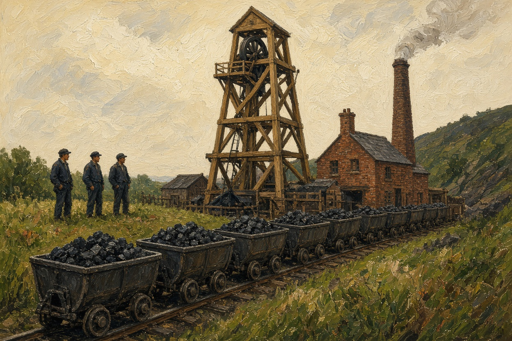

Coal instead of wood Coal takes the place of wood פחם במקום עץ הפחם תופס את מקום העץ
By the end of this page, say why people started to burn coal. By the end of this page, explain why coal took the place of wood. בסוף העמוד תוכלו לומר למה התחילו לשרוף פחם. בסוף העמוד תוכלו להסביר מדוע הפחם תפס את מקום העץ.
About 200 years ago, people started to burn coal. Coal ran the machines in factories. It also ran trains and steam ships. About two hundred years ago, people began to use coal to run the machines in factories and to move trains and steamships. לפני כמאתיים שנה התחילו לשרוף פחם. הפחם הפעיל מכונות בבתי חרושת, וגם רכבות וספינות קיטור. לפני כמאתיים שנה החלו להשתמש בפחם כדי להפעיל מכונות בבתי החרושת, וכדי להניע רכבות וספינות קיטור.

Coal is a rock. People also call it stone coal. There is a huge amount of it under the ground. People knew about coal for thousands of years, and some of them burned it to keep warm. Without machines, it was very hard to dig the coal out. Coal is a kind of rock, so it is sometimes called stone coal. Enormous amounts of it lie underground. People had known coal for thousands of years, and in some places they already burned it for heat. Until there were machines, it was hard to bring the coal up out of the ground. פחם הוא סלע. קוראים לו גם פחם-אבן. יש ממנו המון מתחת לאדמה. אנשים הכירו את הפחם אלפי שנים, ובמקומות אחדים כבר שרפו אותו לחימום. בלי מכונות היה קשה מאוד להוציא את הפחם מהאדמה. הפחם הוא סלע, ולכן קוראים לו לפעמים פחם-אבן. הוא מצוי באדמה בכמויות עצומות. בני האדם הכירו את הפחם זה אלפי שנים, ובמקומות אחדים כבר השתמשו בו לחימום. כל עוד לא היו מכונות, היה קשה להעלות את הפחם מתוך האדמה.